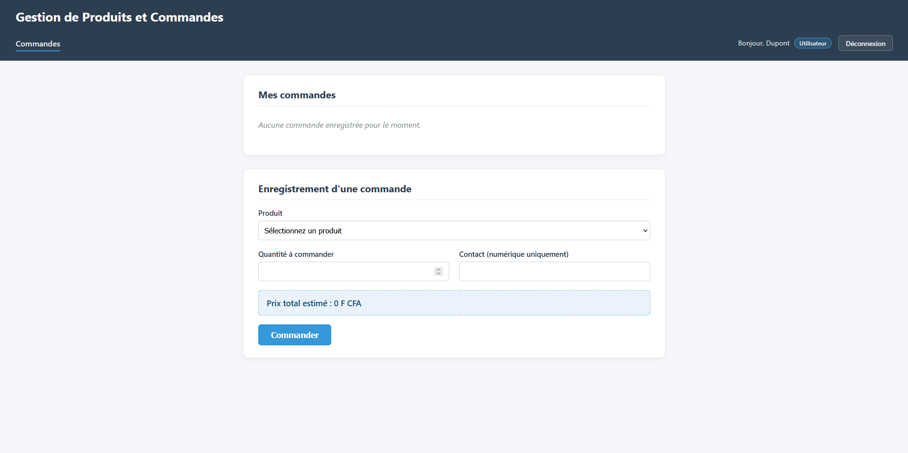
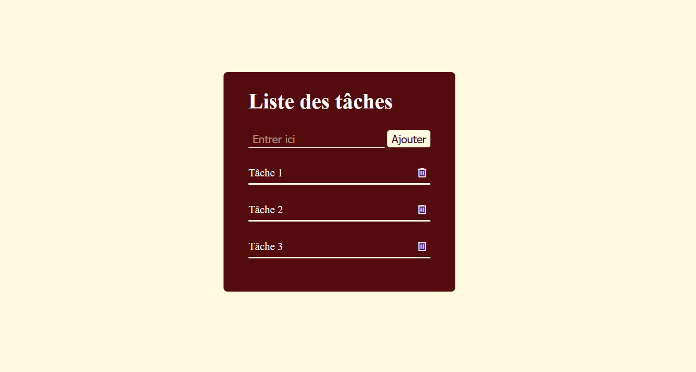
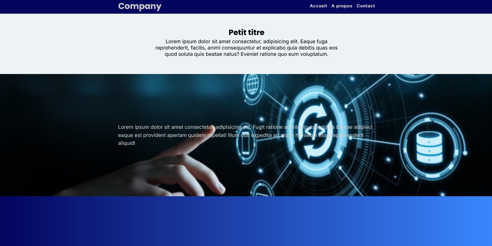
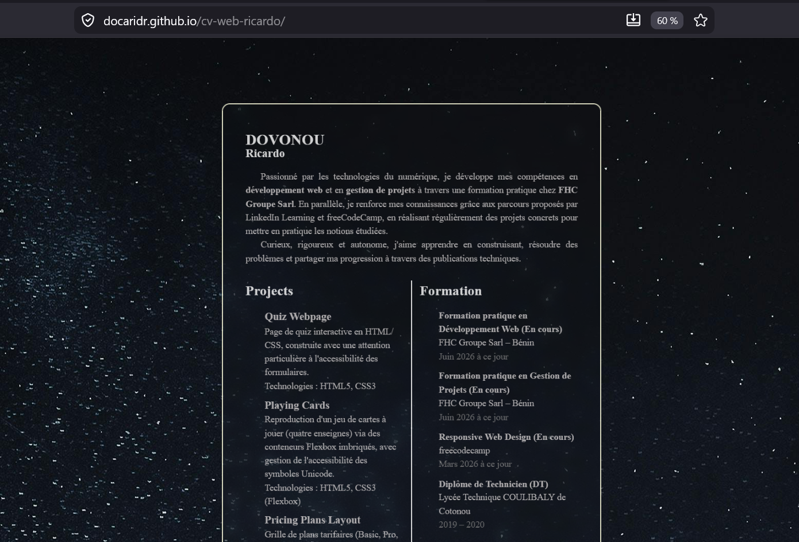
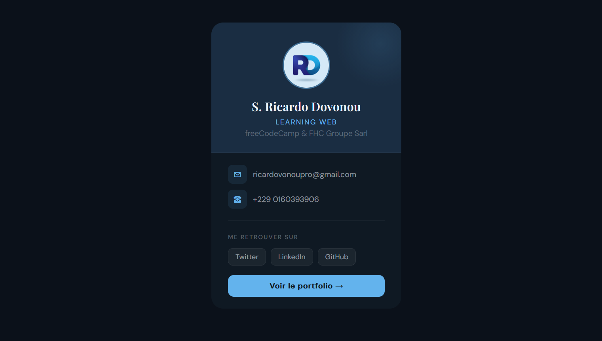
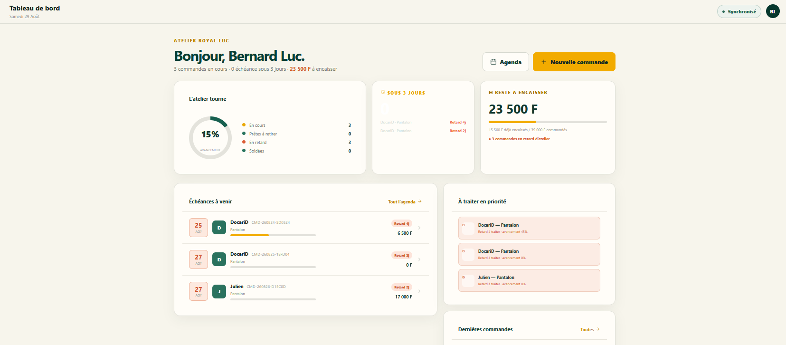

01Projet principalGestion de produits et commandes
Application web avec authentification, contrôle d’accès par rôles, gestion des produits, du stock et des commandes.
PHPMySQLPDOJavaScript
Voir sur GitHubBonjour, je suis
Développeur Web en début de parcours | Compétences en Gestion de Projets
Je construis des interfaces et applications web en transformant progressivement mes apprentissages en projets concrets.
Une progression guidée par la pratique
Passionné par les technologies du numérique, j’ai complété une formation pratique en Développement Web et en Gestion de Projets chez FHC Groupe Sarl. Je développe des interfaces et applications web avec HTML5, CSS3, JavaScript, PHP et MySQL, tout en renforçant mes compétences à travers des projets pratiques et des parcours complémentaires.
Ma formation en gestion de projets me permet également d’aborder les réalisations numériques avec une approche structurée, de la définition du besoin à la planification et au suivi.
Ricardo DOVONOU
Bénin
Des bases techniques renforcées par des projets concrets.
JavaScript · CSS Grid · Sécurité côté serveur · Applications web plus complètes
Des réalisations concrètes pour transformer mes apprentissages en compétences.

01Projet principalApplication web avec authentification, contrôle d’accès par rôles, gestion des produits, du stock et des commandes.

02Application de gestion de tâches avec ajout et suppression dynamique, validation, prévention des doublons, délégation d’événements et animations CSS.

03Intégration autonome d’un site vitrine multipage à partir d’un brief et de maquettes, avec navigation responsive, menu hamburger et formulaire de contact.

04Version web interactive de mon CV, développée dans le cadre de ma formation chez FHC Groupe Sarl, avec structure sémantique, design responsive et animations CSS.

05Carte de visite digitale centrée, accessible et au design sombre moderne.

06En coursProjet web complexe présenté à la fin de ma formation pratique chez FHC Groupe Sarl. Améliorations en cours avant les tests auprès d’utilisateurs cibles.
Une progression construite entre apprentissage en ligne et formation pratique.
Formation pratique terminée en développement web : HTML5, CSS3, JavaScript, PHP, MySQL et réalisation de projets concrets.
Formation pratique terminée couvrant le cadrage, le WBS, la planification, les ressources, le budget et les risques.
Parcours consacré à HTML5, CSS3, Flexbox, au responsive design, à l’accessibilité et à des projets pratiques.
Certificats obtenus en programmation, HTML, CSS, JavaScript, jQuery, Git et GitHub.
Diplôme de technicien en Installation et Maintenance Informatique.
Les qualités qui accompagnent ma progression professionnelle.
Je recherche une opportunité de stage ou un premier poste en développement web afin de continuer à progresser tout en contribuant à des projets concrets.
Une opportunité, une idée ou simplement envie d’échanger ?
Bénin